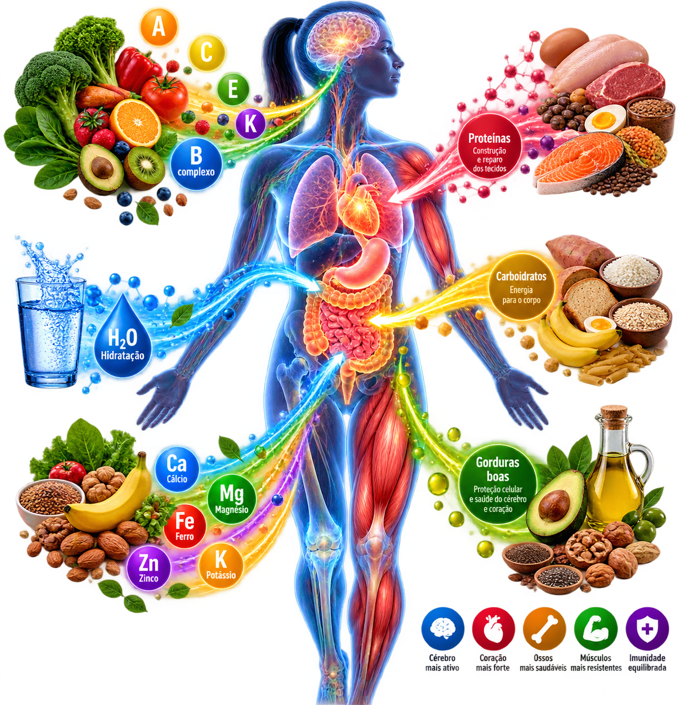
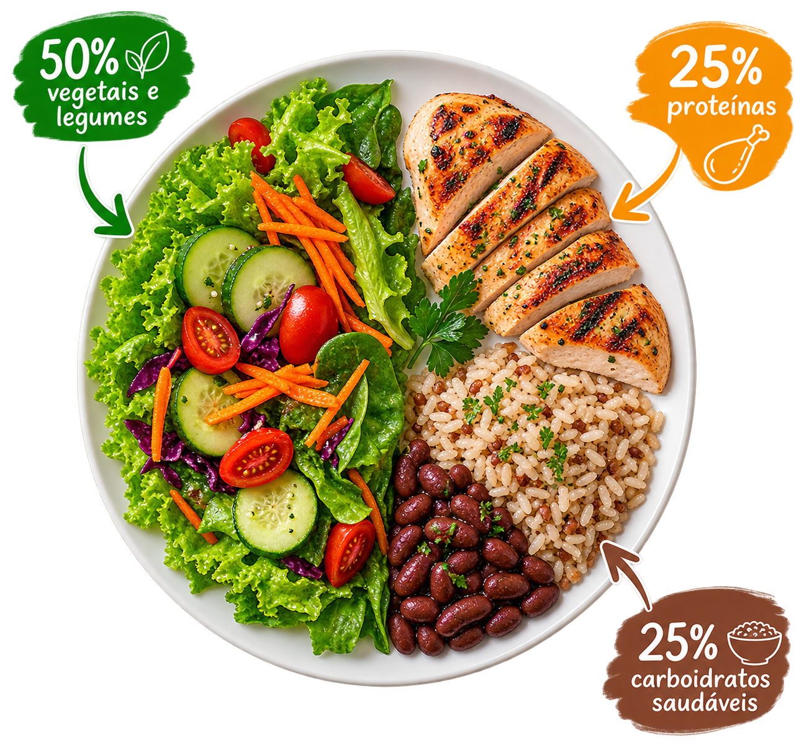

🍟 Frituras frequentes
Batata frita, salgadinhos fritos e empanados podem fornecer muitas calorias. O consumo frequente pode dificultar o controle do peso, principalmente quando substituem refeições nutritivas.

Você está acessando um portal criado para ajudar você a conquistar uma vida mais saudável, leve e equilibrada por meio de uma alimentação mais saudável. Aqui, você encontrará informações, dicas e inspirações para fazer escolhas melhores no seu dia a dia e cuidar do seu bem-estar de forma simples e consciente.
O Vida Leve nasceu com a missão de guiar você rumo a uma rotina mais saudável, prática e consciente. Acreditamos que uma boa alimentação não precisa ser sinônimo de restrições severas, mas sim de equilíbrio, variedade e escolhas inteligentes que nutrem o corpo e a mente. Para garantir a energia e o bom funcionamento do organismo no dia a dia, nosso foco é descomplicar a nutrição através de conteúdos acessíveis sobre os pilares fundamentais da saúde:

O corpo humano é uma máquina biológica perfeita e complexa. Tudo o que comemos passa por um verdadeiro processo de transformação para converter comida em energia, construção celular e proteção para a nossa saúde.
Aqui estão alguns alimentos ricos em carboidratos excelentes para incluir no cardápio do Vida Leve:
As proteínas são essenciais para a construção e reparo dos músculos, pele, cabelos e tecidos, além de atuarem na produção de hormônios, enzimas e anticorpos para o sistema imunológico.
As gorduras boas (insaturadas) são fundamentais para o organismo: protegem o coração, auxiliam na absorção de vitaminas lipossolúveis (A, D, E e K), participam da produção de hormônios e ajudam a manter a saciedade.
As fibras são fundamentais para o bom funcionamento do intestino, controle da glicemia e promoção da saciedade.
🌿 Guia Prático de Alimentação Saudável: como ter uma rotina equilibrada sem neuras.
Uma maneira simples de montar refeições equilibradas é dividir o prato entre vegetais, proteínas e carboidratos.

Comer melhor não significa passar fome ou cortar todos os alimentos de que você gosta. Significa fazer escolhas equilibradas, priorizar alimentos nutritivos e reduzir os excessos que podem prejudicar sua saúde e seus objetivos.
Batata frita, salgadinhos fritos e empanados podem fornecer muitas calorias. O consumo frequente pode dificultar o controle do peso, principalmente quando substituem refeições nutritivas.
Doces, balas, bolos recheados e sobremesas muito açucaradas podem aumentar bastante a ingestão de calorias sem oferecer muitos nutrientes.
Salsicha, linguiça, presunto, mortadela e salame devem ser consumidos com moderação. Prefira fontes de proteína menos processadas no dia a dia.
Alguns biscoitos recheados, macarrões instantâneos, refeições prontas e salgadinhos contêm muito sódio, açúcar ou gorduras. Verifique os rótulos e priorize alimentos in natura ou minimamente processados.
Os refrigerantes açucarados fornecem calorias e açúcar, mas oferecem poucos nutrientes. A versão sem açúcar reduz esse consumo, mas a água continua sendo uma ótima escolha para a hidratação.
Néctares, refrescos e bebidas de frutas podem conter açúcar adicionado. Confira a lista de ingredientes e prefira a fruta inteira sempre que possível.
Podem conter altas quantidades de cafeína e, em algumas versões, açúcar. O excesso pode prejudicar o sono, aumentar a ansiedade e provocar palpitações.
O álcool fornece calorias e pode atrapalhar o sono, a recuperação e as escolhas alimentares. Quanto menor o consumo, menor o risco relacionado ao álcool.
💧 Melhor escolha para o dia a dia: água. A quantidade necessária varia conforme o clima, a atividade física e as necessidades de cada pessoa.
Nenhum alimento isolado impede o emagrecimento. Entretanto, alguns hábitos podem dificultar a criação de um déficit calórico, que ocorre quando o corpo gasta mais energia do que recebe pela alimentação.
Uma estratégia melhor: combine proteínas, carboidratos, vegetais e fontes de gorduras saudáveis em refeições equilibradas. Ajuste as porções aos seus objetivos, sem precisar excluir grupos alimentares inteiros.
A digestão não acontece em um tempo único. Os alimentos passam por diferentes etapas: boca, estômago, intestino delgado e intestino grosso. O tempo depende da composição da refeição e das características de cada pessoa.
Carnes, ovos, leite e peixes fornecem proteínas que são quebradas em partes menores durante a digestão. O processo acontece principalmente no estômago e no intestino delgado, onde os aminoácidos são absorvidos.
Tempo: não existe um número fixo para a digestão completa da proteína animal. Refeições maiores ou com mais gordura podem levar mais tempo para sair do estômago.
Feijão, lentilha, grão-de-bico, ervilha, soja e derivados fornecem proteínas. A digestão também ocorre principalmente no estômago e no intestino delgado.
Tempo: varia conforme o alimento, o preparo e a quantidade de fibras. Leguminosas podem demorar mais para percorrer o intestino por causa das fibras e da fermentação intestinal.
Arroz, batata, aveia, pão, frutas e massas fornecem carboidratos. A digestão começa na boca e continua no intestino delgado, onde muitos carboidratos são transformados em açúcares simples e absorvidos.
Tempo: os carboidratos simples costumam ser digeridos mais rapidamente. Alimentos ricos em fibras, como aveia e grãos integrais, podem retardar a absorção e influenciar o trânsito intestinal.
A gordura é digerida principalmente no intestino delgado e pode retardar o esvaziamento do estômago. Por isso, refeições com muita gordura podem levar mais tempo para serem processadas.
Importante: isso não significa que gorduras saudáveis devam ser eliminadas. Azeite, castanhas, sementes e abacate podem fazer parte de uma alimentação equilibrada.
🔎 Você sabia? O tempo que a comida fica no estômago não é o mesmo que o tempo de trânsito intestinal. O percurso completo pelo sistema digestivo pode levar aproximadamente de 1 a 3 dias, com grande variação individual.
Alimentação saudável não é perfeição nem restrição extrema. É construir hábitos sustentáveis, um dia de cada vez. O melhor plano alimentar é aquele que atende às suas necessidades e que você consegue manter.